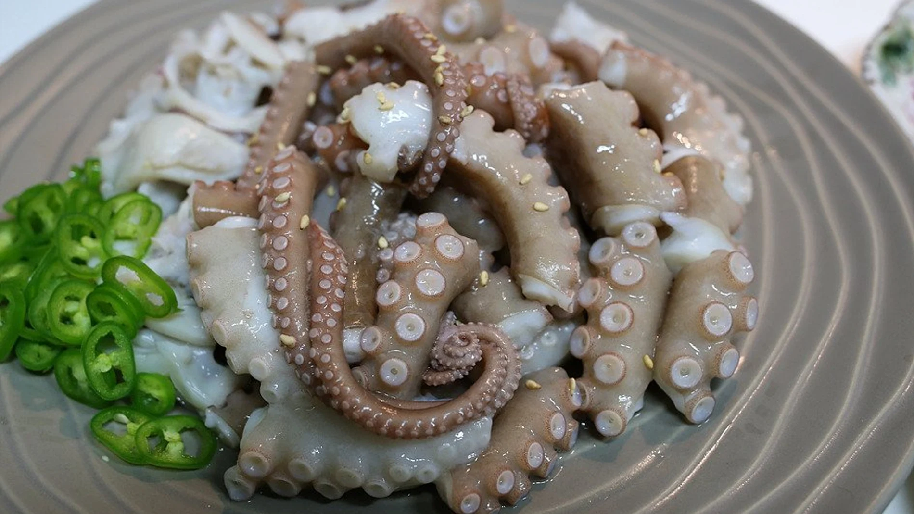
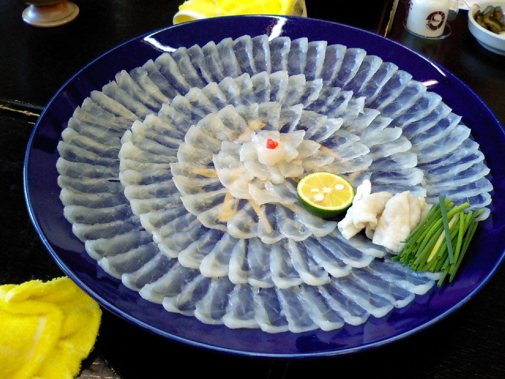
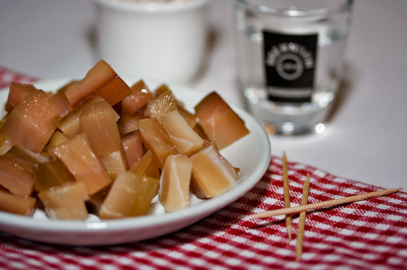
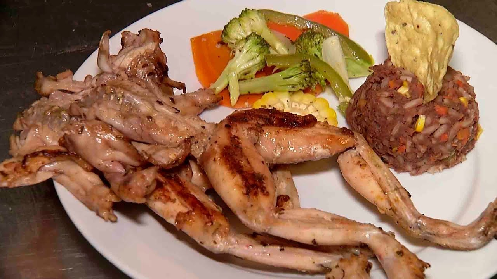

Restaurante La última cena
"Platos para morirse"
Nuestros platos
- Sannakji - 30.000 COP 
- El sannakji o pulpo pequeño vivo, es un platillo típico de la gastronomía japonesa, se sirve cortado en pequeños trozos, y se condimenta con sésamo o aceite de sésamo mientras el pulpo sigue retorciéndose. Un plato que puede asfixiarte con un bocado de tentáculo vivo.
- Takifugu - 40.000 COP 
- Conocido como pez globo, es considerado una de las delicias exóticas de Japón. Este pez mantiene en su interior uno de los veneno más letales del mundo, capaz de paralizar los músculos y producir la muerte por asfixia. El sashimi de fugu es muy popular y solicitado. ¿Te animarías a probarlo?
- Hákarl - 46.000 COP 
- Es un platillo a base de carne de tiburón de Groenlandia fermentada, muy popular en la cocina islandesa. Comer hákarl hecho por inexpertos es peligroso porque puede producir envenenamiento.
- Ackee - 20.000 COP
- Es conocida como la fruta nacional de Jamaica y componente principal en las comidas tradicionales. Solo puede comerse bien maduro y algunas partes menos las semillas que son venenosas
- Rana toro - 25.000 COP 
- Una comida tradicional en Namibia, también llamada bullfrog, tienen veneno en la piel y en los órganos internos por lo que solo puede comerse algunas partes de la rana.